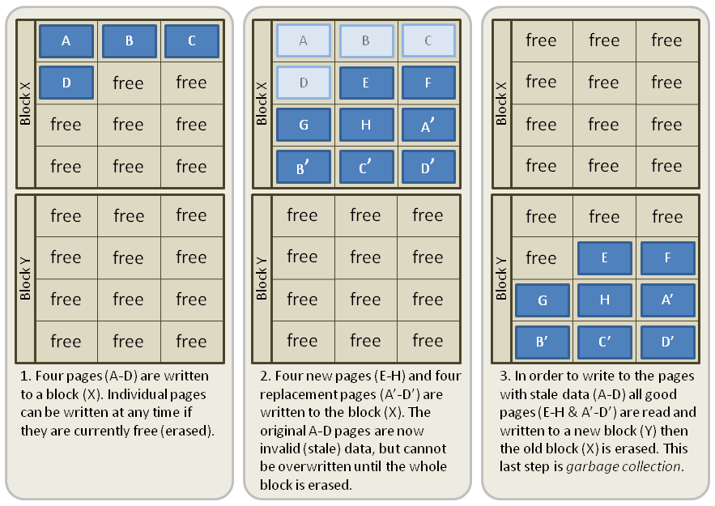

Agenda
- How to store bits?
- How does the kernel talk to the storage?
- How can we do I/O over syscalls?
- Profiling and benchmarking.
- Some performance tips.

Typical terms
- Latency: Time until the first drop of water arrives.
- Throughput: Current volume of water per time.
- Bandwidth: Maximum throughput.
Examples: | Low latency | High latency |
|---|---|---|
Low throughput | SDCards | SSHFS |
High throughput | SSD | HDD |
Fun fact: An extreme example of high latency with high throughput is IPoAC (IP over Avian Carrier), i.e. sticking an USB stick on a homing pidgeon. This was even standardized (jokingly): https://en.wikipedia.org/wiki/IP_over_Avian_Carriers
Hardware: HDDs

- Rotational, stacked disks with reading head.
- Reading head needs to seek to the right position.
- Elevator algorithm for ordering seeks.
- Performance loss at high or low temperature.
- Does not work if moved - bad for laptops.
- Dying, but battled tested & still widely used.
Big advantage: You could debug issues with too many seeks by audio!
Hardware: SDDs

- NAND Flash technology (like USB sticks)
- No expensive seek necessary.
- Limited number of write cycles.
- Becoming cheaper and better every year.
Write software for SSDs. There were some crazy tricks like FIEMAP to make applications re-order their reads in the order of how they are placed on disk. (Huge speedup on HDD, small speedup on SSD), but those will become pointless more and more.
SSD Write amplification
Source: http://databasearchitects.blogspot.com/2021/06/what-every-programmer-should-know-about.html?m=1
SSDs are divided into blocks (seveal MB), which are divided into pages (often 4K). Pages cannot be erased, only blocks can be. Updates of a pages are written to new blocks. If space runs out, old blocks with many stale pages are erased and can be re-used. The number of physical writes is therefore higher than the number of logical writes. The more space is used, the higher the write amplication factor though.
What we can do about it: Buy bigger SSDs than you need. Also avoid rewriting pages if possible. Secret: SSD have some spare space to keep working they don't tell you about.
Also enable TRIM support if your OS did not yet, but nowadways always enabled. This makes it possible for the OS to tell the SSD additional blocks that are not needed anymore.
Virtual File System

Below device drivers: hardware controllers - beyond this talk. They can also re-order writes and are mostly concerned with durability, i.e. a SSD controller will try to distribute the blocks he used to make sure they have a similar amount of write cycles.
How do syscalls work?
// Example: writing to a file // as documented in glibc: // ssize_t write( // int fd, // file descriptor // const void buf[], // data // size_t count // size of data // ); write(1, "Hello world!\n", 12);
Compiled:
; use the `write` system call (1) movl $1, %rax ; write to stdout (1) - 1st arg movl $1, %rbx ; use string "Hello World" - 2nd arg movl 'Hello World!\n', %rcx ; write 12 characters - 3rd arg movl $12, %rdx ; make system call via special instruction syscall ; The return code is in the RAX register.
All available syscalls and their ids are here: https://filippo.io/linux-syscall-table/
Only method of userspace to talk to kernel. How to call is ISA specific.
The syscall instruction performs a context switch: This means the current state of the process (i.e. the state of all registers in the CPU) is saved away, so it can be restored later. Once done, the kernel sets the register to its needs, does whatever is required to serve the system call. When finished, the process state is restored and execution continues.
Context switches also happen when you're not calling any syscalls. Simply when the scheduler decide this process is done with execution.
Typical syscalls
- IO: read, write, close
- Files: stat, chmod, mkdir
- Memory: sbrk, mmap
- Processes: fork, kill, wait
- Network: listen, connect, epoll
- Mysterious: ioctl, chroot, mount
Luckily for us, glibc and Go provide us nice names and interfaces to make those system calls. They usually provide thin wrappers that also do some basic error checking. Watch out: fread is doing buffering in userspace!
Can anyone think of another syscall not in the list above? exit! chdir ... (There are about 300 of them)
Typical read I/O
char buf[1024]; int fd = open("/some/path", O_CREAT|O_RDONLY|O_TRUNC); size_t bytes_read = 0; while((bytes_read = read(fd, buf, sizeof(buf))) > 0) { /* do something with buf[:bytes_read] */ } close(fd);
Looks fairly straightforward and most of you might have written something like that already. Maybe even for sockets or other streams. BUT here's the thing: every read needs one syscall and all bytes from the file are copied to a userspace-supplied buffer. This model is flexible, but costs performance. With mmap() and io_uring we will see options that can, sometimes, work with zero copies.
Sidenote: Always be nice and close your file descriptors. That has two reasons:
- You are only allowed a certain maximum of file descriptors per process. (check with ulimit -a for soft limits and ulimit -aH for hard limits)
- If you write something to a file close will also flush file contents that are not written to disk yet.
Typical write I/O
char buf[1024]; size_t bytes_in_buf = 0; int fd = open("/some/path", O_CREAT|O_WRONLY|O_TRUNC); do { /* fill buf somehow with data you'd like to write, * set bytes_in_buf accordingly. */ } while(write(fd, buf, bytes_in_buf) >= 0) fsync(fd); close(fd);
Q1: Does this mean that the data is available to read() when write() returned? Q2: Is the data saved on disk after write() returns.
- A1: Mostly. There might be exotic edge cases with non-POSIX filesystems,
but you should mostly be able to assume this.
- A2: No. You should call fsync() to ensure that and even than, it is
sadly not guaranteed depending on the storage driver and hardware. (Kernel has to rely on the hardware to acknowledge received data)
---
There is a bug here though:
write() returns the number of written bytes. It might be less than bytes_in_buf and this is not counted as an error. The write call might have simply been interrupted and we expect that it is called another time with the remaining data. This only happens if your program uses POSIX signals that were not registed with the SA_RESTART flag (see man 7 signal). Since it's default, it's mostly not an issue in C.
Go hides this edgecase for you in normal likes fd.Write() or io.ReadAll(). However, the Go runtime uses plenty of signals and if you use the syscalls package for some reason, then you might be hit by this kind of bug. This does not affect only write() but also read() and many other syscalls.
Also please note: There is some error handling missing here.
Fixed write version
/* ... */ char *buf_ptr = buf; while(bytes_in_buf > 0) { size_t written = write(fd, buf_ptr, bytes_in_buf); bytes_in_buf -= written; buf_ptr += written; if(errno != 0) { return; } } /* ... */
TODO: Is this slide that important?
What about fread()?
Confusingly, this is double buffered.
Usecases:
- You need to read byte by byte.
- You need to unread some bytes frequently.
- You need to read easily line by line.
Otherwise: Do not use.
Userspace buffered functions. No real advantage, but limiting and confusing API. Has some extra features like printf-style formatting.
In Go the normal read/write is using the syscall directly, bufio is roughly equivalent to f{read,write} etc. fsync() is a syscall, not part of that even though it starts with "f"
Syscalls are expensive
$ dd if=/dev/urandom of=./x bs=1M count=1024 $ dd if=x of=/dev/null bs=1b 4,07281 s, 264 MB/s $ dd if=x of=/dev/null bs=32b 0,255229 s, 4,2 GB/s $ dd if=x of=/dev/null bs=1024b 0,136717 s, 7,9 GB/s $ dd if=x of=/dev/null bs=32M 0,206027 s, 5,2 GB/s
Good buffer sizes: \(1k - 32k\)
Each syscall needs to store away the state of all registers in the CPU and restore it after it finished. This is called "context switch".
Many syscalls vs a few big ones.
Try to reduce the number of syscalls, but too big buffers hurt too.
Making syscalls visible
# (Unimportant output skipped) $ strace ls -l /tmp openat(AT_FDCWD, "/tmp", ...) = 4 getdents64(4, /* 47 entries */, 32768) = 2256 ... statx(AT_FDCWD, "/tmp/file", ...) = 0 getxattr("/tmp/file", ...) = -1 ENODATA ... write(1, "r-- 8 sahib /tmp/file", ...)
Insanely useful tool to debug hanging tools or tools that crash without a proper error message. Usually the last syscall they do gives a hint.
Important options:
-c: count syscalls and stats at the end. -f: follow also subprocesses.
Page cache

- All I/O access is cached using the page cache (dir + inode)
- Free pages are used to store recently accessed file contents.
- Performance impact can be huge.
- Writes are asynchronous, i.e. synced later
Good overview and more details here: https://biriukov.dev/docs/page-cache/2-essential-page-cache-theory/
Caveat: Writes are buffered!
# wait for ALL buffers to be flushed: $ sync # pending data is now safely stored.
// wait for specific file to be flushed: if(fsync(fd) < 0) { // error handling } // pending data is now safely stored.
That's why we have the sync command before the drop_cache command.
Clearing the cache
For I/O benchmarks always clear caches:
# 1: Clear page cache only. # 2: Clear inodes/direntries cache. # 3: Clear both. sync; echo 3 | sudo tee /proc/sys/vm/drop_caches
Example: code/io_cache
Alternative to fsync()
# Move is atomic! $ cp /src/bigfile /dst/bigfile.tmp $ mv /dst/bigfile.tmp /dst/bigfile
TODO: Move down. This only works obviously if you're not constantly updating the file, i.e. for files that are written just once.
Detour: Filesystems
They layout file data on disk:
- ext2/3/4: good, stable & fast choice.
- fat8/16/32: simple, but legacy, do not use.
- NTFS: slow and only for compatibility.
- XFS: good with big files.
- btrfs: feature-rich, can do CoW & snapshots.
- ZFS: highly scalable and very complex.
- sshfs: remote access over FUSE
Actual implementation of read/write/etc. for a single filesystem like FAT, ext4, btrfs. There are different ways to layout and maintain data on disk, depending on your use case.
Syscalls all work the same, but some filesystems have better performance regarding writes/reads/syncs or are more targeted at large files or many files.
Most differences are admin related (i.e. integrity, backups, snapshots etc.)
Detour: Fragmentation

What OS do you think of when you hear "defragmentation"? Right, Windows. Why? Because NTFS used to suffer from it quite heavily. FAT suffered even more from this.
Fragmentation means that the content of a file is not stored as one continuous block, but in several blocks that might be scattered all over the place, possibly even out-of-order (Block B before Block A). With rotational disk this was in issue since the reading head had to jump all over the place to read a single file. This caused noticeable pauses.
Thing is: Linux filesystems rarely require defragmentation and if you are in need of defragmentation you are probably using an exotic enough setup that you know why.
Most Linux filesystems have strategies to actively, defragment files (i.e. bringing the parts of the file closer together) during writes to that file. In practice, it does not matter anymore today.
Detour: FUSE

VM: mmap()
int fd = open("/var/tmp/file1.db") char *m = mmap( NULL, 1024 /* file size */, PROT_READ|PROT_WRITE /* prot */, MAP_SHARED /* flags */, fd, 0 ); m[17] = '!'; /* set byte 18 to »!« */

Maybe one of the most mysterious and powerful features we have on Linux.
Typical open/read/write/close APIs see files as streams. They are awkward to use if you need to jump around a lot in the file itself (like some datbases do).
With mmap() we can handle files as arrays and let the kernel manage reading/writing the required data from us magically on access. See m[17] above, it does not require reading the respective part of the file explicitly.
Good mmap use cases:
- Reading large files (+ telling the OS how to read)
- Jumping back and forth in big files.
- Sharing the file data with several processes in a very efficient way.
- Zero copy during reading! No buffering needed.
- Ease-of-use. No buffers, no file handles, just arrays.
Image source:
https://biriukov.dev/docs/page-cache/5-more-about-mmap-file-access/
VM: mmap() controversy
- Some databases use mmap() (Influx, sqlite3)
- Some people advise vehemently against it. 💩
- Correct, but the situation is complicated.
- Main argument: Not enough control.
- For some usecases mmap() is fine for databases.

io_uring
I/O improving performance
- Avoid I/O.
- Use a sane buffer size.
- Use append only data for writing.
- Batch writes as they evict caches.
- Prefer few big files over many small files.
- Avoid directories with high amount of files (git)
- For modifying big files use mmap.
- Buy faster hardware.
I/O improving performance #2
- Use a different I/O scheduler (none).
- Use a different filesystem (tmpfs)
- Leverage the page cache and trust the OS
- Use zero-copy techniques: sendfile, splice
- Not crazy: Use DMA if possible (hardware dependent)
- Slightly crazy: fadvise() if you need prefetch
- Maybe crazy: use O_DIRECT
- Likely crazy: skip fsync()
- Definitely crazy: FIEMAP
TODO: io_uring
I/O scheduler
Re-orders read and write requests for performance.
- none: Does no reordering.
- bfq: Complex, designed for desktops.
- mq-deadline, kyber: Simpler, good allround schedulers.
In the age of SSDs we can use dumber schedulers. In the age of HDDs schedulers were vital.
madvise() & fadvise()
Example: code/fadvise
Example: code/madvise
fadvise() and madvise() can be used to give the page cache hints on what pages are going to be used next and in what order. This can make a big difference for complex use cases like rsync or tar, where the program knows that it needs to read a bunch of files in a certain order. In this case advises can be given to the kernel quite a bit before the program starts reading the file.
The linked examples try to simulate this by clearing the cache, giving a advise, waiting a bit and then reading the file in a specific order.
The examples also contain some noteable things:
- Reading random is much slower than reading forward.
- Reading backwards is the end boss and really much, much slower.
- hyperfine is a nice tool to automate little benchmarks like these.
- Complex orders (like heaps or tree traversal) cannot be requested.
- mmap does not suffer from the read order much and is much faster for this kind of no-copy-needed workload.
ionice
# Default level is 4. Lower is higher. $ ionice -c 2 -n 0 <some-pid>
Well, you can probably guess what it does.
Why is cp faster?
package main import( "os" "io" ) func main() { src, _ := os.Open(os.Args[1]) dst, _ := os.Create(os.Args[2]) io.Copy(dst, src) }
cp is not faster because it copies data faster, but because it avoids copies to user space by using specialized calls like:
- ioctl(5, BTRFS_IOC_CLONE or FICLONE, 4) = 0 (on btrfs)
- copy_file_range() - performs in-kernel copy, sometimes even using DMA
Find out using strace cp src dst. If no trick is possible it falls back to normal buffered read/write.
Reduce number of copies
- Do not copy buffers in your program too often
- You can use readv to splice existing buffers to one.
- Use hardlinks if possible
- Use CoW reflinks if possible.
- sendfile() to copy files to Network.
- copy_file_range() to copy between files.